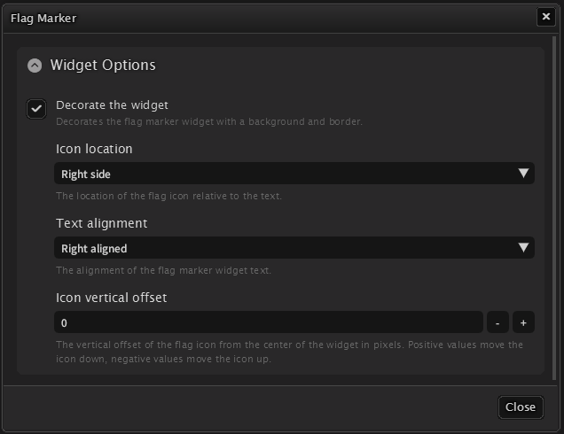

Toolbar
Umbra's main feature is the customizable toolbar that allows you to host a variety of widgets to enhance your gameplay experience. The toolbar is divided into three columns, one for the left, center, and right side of the screen, each of which can host multiple widgets. Widgets can be added, removed, and rearranged to suit your preferences, allowing you to create a personalized interface that fits your unique playstyle.

Toolbar customization
The toolbar can be customized in a variety of ways to suit your preferences. You can change the size, scale, and position of the toolbar, as well as the opacity and background color. Additionally, you can choose to show or hide the toolbar based on certain conditions, such as when in combat or when the mouse is over the toolbar.
All of these options can be found under the General Settings tab in Umbra's settings window.
Color profiles can be created, customized and shared by navigating to the Appearance tab.
Some of these options include, but are not limited to:
- Changing the toolbar position from bottom to the top of the screen.
- Stretching the toolbar to the screen edges, or having it "float" in the middle like a dock.
- Adjusting the margins around the toolbar, allowing you to tightly fit it within your custom UI setup.
- Automatically hiding the toolbar until the mouse cursor goes near it.
Widget arrangement
When opening the settings window, either by typing /umbra in the chat, or using the button in
the system menu on your toolbar (if present), the first thing you'll see if the toolbar widgets tab. Here
you can add, remove, and rearrange widgets to your liking.
 Clicking on a widget tile will reveal a set of buttons that allow you to move the widget within the
container, move it to a different container, or remove it entirely. You can open the settings window for
each widget instance by clicking the 'cog' icon on the widget tile.
Clicking on a widget tile will reveal a set of buttons that allow you to move the widget within the
container, move it to a different container, or remove it entirely. You can open the settings window for
each widget instance by clicking the 'cog' icon on the widget tile.
Widget Instances
Each added widget is a unique instance of that widget type. This means that you can have multiple instances of the same widget type with different settings. For example, you can have two different clocks with one showing the in-game time and the other showing the server time. Removing a widget instance will only remove that specific instance, not the widget type itself.
Click on the + Add widget button that appears at the bottom of each column to add a new widget
instance to that column. When clicking this button, a new window will appear with a list of available
widgets for you to choose from.
Removing widget instances
Since removing a widget instance is destructive, since doing so will also remove any settings you've set for a particular instance, the delete button (trash icon) only works when you're holding down the Shift key.
Widget customization
Each widget has its own set of customization options that can be accessed by clicking the 'cog' icon on the widget tile. Depending on the widget type, you can change the appearance, behavior, and other settings of the widget to suit your preferences. Some widgets may have more settings than others, depending on the complexity of the widget. 